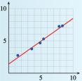
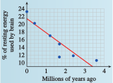
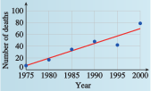
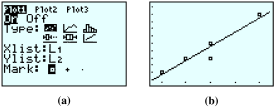
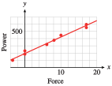

Section 8.1 Linear Regression
¶We have spent most of this chapter analyzing models described by graphs or equations. To create a model, however, we often start with a quantity of data. Choosing an appropriate function for a model is a complicated process. In this section, we consider only linear models and explore methods for fitting a linear function to a collection of data points. First, we fit a line through two data points.
Subsection 8.1.1 Fitting a Line through Two Points
If we already know that two variables are related by a linear function, we can find a formula from just two data points. For example, variables that increase or decrease at a constant rate can be described by linear functions.
Example 8.1.1.
In 1993, Americans drank 188.6 million cases of wine. Wine consumption increased at a constant rate over the next decade, and we drank 258.3 million cases of wine in 2003. (Source: Los Angeles Times, Adams Beverage Group)
- Find a formula for wine consumption, \(W\text{,}\) in millions of cases, as a linear function of time, \(t\text{,}\) in years since 1990.
- State the slope as a rate of change. What does the slope tell us about this problem?
- We have two data points of the form \((t, W)\text{,}\) namely \((3, 188.6)\) and \((13, 258.3)\text{.}\) We use the point-slope formula to fit a line through these two points. First, we compute the slope.\begin{equation*} \frac{\Delta W}{\Delta t}=\frac {258.3 - 188.6}{13 - 3}= 6.97 \end{equation*}Next, we use the slope m = \(6.97\) and either of the two data points in the point-slope formula.\begin{equation*} \begin{aligned}[t] W \amp =W_1 + m(t - t_1) \\ W \amp = 188.6 + 6.97(t - 3) \\ W \amp = 167.69 + 6.97t \end{aligned} \end{equation*}Thus, \(W = f (t) = 167.69 + 6.97t\text{.}\)
-
The slope gives us the rate of change of the function, and the units of the variables can help us interpret the slope in context.
\begin{equation*} \frac{\Delta W}{\Delta t}= \frac{258.3 - 188.6 \text{ millions of cases}}{13 - 3\text{ years}} = 6.97 \text{ millions of cases / year} \end{equation*}Over the 10 years between 1993 and 2003, wine consumption in the United States increased at a rate of 6.97 million cases per year.
To Fit a Line through Two Points:.
Compute the slope between the two points.
-
Substitute the slope and either point into the point-slope formula
\begin{equation*} y = y_1 + m(x - x_1) \end{equation*}
Checkpoint 8.1.2.
In 1991, there were 64.6 burglaries per 1000 households in the United States. The number of burglaries reported annually declined at a roughly constant rate over the next decade, and in 2001 there were 28.7 burglaries per 1000 households. (Source: U.S. Department of Justice)
Find a function for the number of burglaries, \(B\text{,}\) as a function of time, \(t\text{,}\) in years, since 1990.
State the slope as a rate of change. What does the slope tell us about this problem?
\(y = 68.19 - 3.59x\)
\(-3.59\) burglaries per \(1000\) households per year. From 1991 to 2001, the burglary rate declined by \(3.59\) burglaries per 1000 households every year.
Subsection 8.1.2 Scatterplots
Empirical data points in a linear relation may not lie exactly on a line. There are many factors that can affect experimental data, including measurement error, the influence of environmental conditions, and the presence of related variable quantities.
Example 8.1.3.
A consumer group wants to test the gas mileage of a new model SUV. They test-drive six vehicles under similar conditions and record the distance each drove on various amounts of gasoline.
| Gasoline used (gal) | \(9.6\) | \(11.3\) | \(8.8\) | \(5.2\) | \(10.3\) | \(6.7\) |
| Miles driven | \(155.8\) | \(183.6\) | \(139.6\) | \(80.4\) | \(167.1\) | \(99.7\) |
Are the data linear?
Draw a line that fits the data.
What does the slope of the line tell us about the data?
-
No, the data are not strictly linear. If we compute the slopes between successive data points, the values are not constant. We can see from an accurate plot of the data, shown below, that the points lie close to, but not precisely on, a straight line.


- We would like to draw a line that comes as close as possible to all the data points, even though it may not pass precisely through any of them. In particular, we try to adjust the line so that we have the same number of data points above the line and below the line. One possible solution is shown above.
- To compute the slope of the our estimated line, we first choose two points on the line. Our line appears to pass through one of the data points,\((8.8, 139.6)\text{.}\) We look for a second point on the line whose coordinates are easy to read, perhaps \((6.5,100)\text{.}\) The slope is\begin{equation*} m = \frac{139.6 - 100}{8.8 - 6.5}= 17.2\text{ miles per gallon} \end{equation*}According to our data, the SUV gets about 17.2 miles to the gallon.
Caution 8.1.4.
To find the slope of your estimated line, be sure to choose points on the line; do not choose any of the data points (unless they happen to lie on your line).
Checkpoint 8.1.5.
Plot the data points. Do the points lie on a line?
Draw a line that fits the data.
| \(x\) | \(1.49\) | \(3.68\) | \(4.95\) | \(5.49\) | \(7.88\) | \(8.41\) |
| \(y\) | \(2.69\) | \(3.7\) | \(4.6\) | \(5.2\) | \(7.2\) | \(7.3\) |

- 
The graph in Example 8.1.3 is called a scatterplot. The points on a scatterplot may or may not show some sort of pattern. Consider the three plots shown below.
- In figure (a), the data points resemble a cloud of gnats; there is no apparent pattern to their locations.
- In figure (b), the data follow a generally decreasing trend, but certainly do not all lie on the same line.
- The points in figure (c) are even more organized; they seem to lie very close to an imaginary line.
If the data in a scatterplot are roughly linear, we can estimate the location of an imaginary line of best fit that passes as close as possible to the data points. We can then use this line to make predictions about the data.
Subsection 8.1.3 Linear Regression
One measure of a person's physical fitness is the body mass index, or BMI. Your BMI is the ratio of your weight in kilograms to the square of your height in centimeters. Thus, thinner people have lower BMI scores, and fatter people have higher scores. The Centers for Disease Control considers a BMI between 18.5 and 24.9 to be healthy.
The points on the scatterplot below show the BMI of Miss America from 1921 to 1991. From the data in the scatterplot, can we see a trend in Americans’ ideal of female beauty?

Example 8.1.6.
- Estimate a line of best fit for the scatterplot above. (Source: http://www.pbs.org)
- Use your line to estimate the BMI of Miss America 1980.
-
We draw a line that fits the data points as best we can, as shown below. (Note that we have set \(t = 0\) in 1920 on this graph.) We try to end up with roughly equal numbers of data points above and below our line.

- We see that when \(t = 60\) on this line, the \(y\)-value is approximately 18.3. We therefore estimate that Miss America 1980 had a BMI of 18.3. (Her actual BMI was 17.85.)
Checkpoint 8.1.7.
Human brains consume a large amount of energy, about 16 times as much as muscle tissue per unit weight. In fact, brain metabolism accounts for about 25% of an adult human’s energy needs, as compared to about 5% for other mammals.
As hominid species evolved, their brains required larger and larger amounts of energy, as shown below. (Source: Scientific American, December 2002)

- Draw a line of best fit through the data points.
- Estimate the amount of energy used by the brain of a hominid species that lived three million years ago.
- 
About \(10.5\%\)
The process of predicting an output value based on a straight line that fits the data is called linear regression, and the line itself is called the regression line. The equation of the regression line is usually used (instead of a graph) to predict values.
Example 8.1.8.
- Find the equation of the regression line in Example 8.1.6.
- Use the regression equation to predict the BMI of Miss America 1980.
- We first calculate the slope by choosing two points on the regression line. The points we choose are not necessarily any of the original data points; instead they should be points on the regression line itself. The line appears to pass through the points \((17, 20)\) and \((67, 18)\text{.}\) The slope of the line is then\begin{equation*} m = \frac{18 - 20}{67 - 17}\approx -0.04 \end{equation*}Now we use the point-slope formula to find the equation of the line. (If you need to review the point-slope formula, see Section 1.5.) We substitute \(m = -0.04\) and use either of the two points for \((x_1, y_1)\text{;}\) we will choose \((17, 20)\text{.}\) The equation of the regression line is\begin{equation*} \begin{aligned}[t] y \amp = y_1 + m(x - x_1)\\ y \amp = 20-0.04(x-17) \amp \amp \blert{\text{Simplify.}}\\ y \amp = 20.68 - 0.04t\\ \end{aligned} \end{equation*}
- We will use the regression equation to make our prediction. For Miss America 1980, \(t = 60\) and\begin{equation*} y = 20.68 - 0.04(60) = 18.28 \end{equation*}This value agrees well with the estimate we made in Example 8.1.6.
Checkpoint 8.1.9.
The number of manatees killed by watercraft in Florida waters has been increasing since 1975. Data are given at 5-year intervals in the table. (Source: Florida Fish and Wildlife Conservation Commission)
| Year | Manatee deaths |
| \(1975\) | \(6\) |
| \(1980\) | \(16\) |
| \(1985\) | \(33\) |
| \(1990\) | \(47\) |
| \(1995\) | \(42\) |
| \(2000\) | \(78\) |

- Draw a regression line through the data points shown in the figure.
- Use the regression equation to estimate the number of manatees killed by watercraft in 1998.
- 
\(y = 4.7 + 2.6t\)
\(65\)
Subsection 8.1.4 Linear Interpolation and Extrapolation
Using a regression line to estimate values between known data points is called interpolation. Making predictions beyond the range of known data is called extrapolation.
Example 8.1.10.
- Use linear interpolation to estimate the BMI of Miss America 1960.
- Use linear extrapolation to predict the BMI of Miss America 2001.
- For 1960, we substitute \(t = 40\) into the regression equation we found in Example 8.1.8.\begin{equation*} y = 20.68 - 0.04(40) = 19.08 \end{equation*}We estimate that Miss America 1960 had a BMI of 19.08. (Her BMI was actually 18.79.)
- For 2001, we substitute \(t = 81\) into the regression equation.\begin{equation*} y = 20.68 - 0.04(81) = 17.44 \end{equation*}
Our model predicts that Miss America 2001 had a BMI of 17.44. In fact, her BMI was 20.25. By the late 1990s, public concern over the self-image of young women had led to a reversal of the trend toward ever-thinner role models.
Example 8.1.10b illustrates an important fact about extrapolation: If we try to extrapolate too far, we may get unreasonable results. For example, if we use our model to predict the BMI of Miss America 2520 (when \(t = 600\)), we get
Even if the Miss America pageant is still operating in 600 years, the winner cannot have a negative BMI. Our linear model provides a fair approximation for 1920–1990, but if we try to extrapolate too far beyond the known data, the model may no longer apply.
We can also use interpolation and extrapolation to make estimates for nonlinear functions. Sometimes a variable relationship is not linear, but a portion of its graph can be approximated by a line.
The graph at right shows a child’s height each month. The graph is not linear because her rate of growth is not constant; her growth slows down as she approaches her adult height. However, over a short time interval the graph is close to a line, and that line can be used to approximate the coordinates of points on the curve.
Checkpoint 8.1.11.
Emily was 82 centimeters tall at age 36 months and 88 centimeters tall at age 48 months.
Find a linear equation that approximates Emily's height in terms of her age over the given time interval.
Use linear interpolation to estimate Emily’s height when she was 38 months old, and extrapolate to predict her height at age 50 months.
Predict Emily's height at age 25 (300 months). Is your answer reasonable?
\(y = 64 + 0.5x\)
\(83\) cm, \(89\) cm
\(214\) cm; No
Estimating a line of best fit is a subjective process. Rather than base their estimates on such a line, statisticians often use the least squares regression line.
This regression line minimizes the sum of the squares of all the vertical distances between the data points and the corresponding points on the line, as shown at left. Many calculators are programmed to find the least squares regression line, using an algorithm that depends only on the data, not on the appearance of the graph.
Example 8.1.12.
- Find the equation of the least squares regression line for the following data:\begin{equation*} (10, 12), (11, 14), (12, 14), (12, 16), (14, 20) \end{equation*}
- Plot the data points and the least squares regression line on the same axes.
-
We must first enter the data.
- Press
STATENTERto select \(Edit\text{.}\) - If there are data in column \(L_1\) or \(L_2\text{,}\) clear them out: Use the \(\boxed{\uparrow}\) key to select \(L_1\text{,}\) press
CLEAR, then do the same for \(L_2\text{.}\) -
Enter the \(x\)-coordinates of the data points in the \(L_1\) column and enter the \(y\)-coordinates in the \(L_2\) column, as shown in figure (a) below.

Now we are ready to find the regression equation for our data.
- Press
STAT\(\boxed{\rightarrow}\) 4 to select linear regression, or LinReg (ax + b), then pressENTER. The calculator will display the equation \(y = ax + b\) and the values for \(a\) and \(b\text{,}\) as shown in figure (b).
You should find that your regression line is approximately \(y = 1.95x - 7.86\text{.}\)
- Press
-
First, we first clear out any old definitions in the list.
- Position the cursor after \(Y_1 =\) and copy in the regression equation as follows:
- Press
VARS\(5\) \(\boxed{\rightarrow}\) \(\boxed{\rightarrow}\)ENTER. - To draw a scatterplot, press
2ndY=\(1\) and set the Plot1 menu as shown in figure (a) below. - Finally, press
ZOOM\(9\) to see the scatterplot of the data and the regression line. The graph is shown in figure (b).

Caution 8.1.13.
When you are through with the scatterplot, press Y= \(\boxed{\uparrow}\) ENTER to turn off the \(Stat Plot\text{.}\) If you neglect to do this, the calculator will continue to show the scatterplot even after you ask it to plot a new equation.
Checkpoint 8.1.14.
Use your calculator’s statistics features to find the least squares regression equation for the data in Checkpoint 8.1.5.
Plot the data and the graph of the regression equation.
\(y = 1.34 + 0.71x\)

Subsection 8.1.5 Section Summary
¶Subsubsection 8.1.5.1 Vocabulary
Look up the definitions of new terms in the Glossary.
Scatterplot
Least squares regression line
Extrapolate
Regression line
Interpolate
Linear regression
Subsubsection 8.1.5.2 CONCEPTS
Data points may not lie exactly on the graph of an equation.
Points in a scatterplot may or may not exhibit a pattern.
We can approximate a linear pattern by a regression line.
We can use interpolation or extrapolation to make estimates and predictions.
If we extrapolate too far beyond the known data, we may get unreasonable results.
Subsubsection 8.1.5.3 STUDY QUESTIONS
What is a regression line?
State two formulas you will need to calculate the equation of a line through two points.
Explain the difference between interpolation and extrapolation.
In general, should you have more confidence in figures obtained by interpolation or by extrapolation? Why?
Subsubsection 8.1.5.4 SKILLS
Practice each skill in the Homework 8.1.6 problems listed.
Find the equation of a line through two points: #1–6, 29–36
Draw a line of best fit: #7–18
Find the equation of a regression line: #11–28, 37–40
Use interpolation and extrapolation to make predictions: #11–40
Exercises 8.1.6 Homework 1.6
¶In Problems 1–6, we find a linear model from two data points.
Make a table showing the coordinates of two data points for the model. (Which variable should be plotted on the horizontal axis?)
Find a linear equation relating the variables.
State the slope of the line, including units, and explain its meaning in the context of the problem.
1.
It cost a bicycle company $\(9000\) to make \(40\) touring bikes in its first month of operation and $\(15,000\) to make \(125\) bikes during its second month. Express the company's monthly production cost, \(C\text{,}\) in terms of the number, \(x\text{,}\) of bikes it makes.
\(x\) \(50\) \(125\) \(y\) \(9000\) \(15,000\) \(C = 5000 + 80x\)
\(m = 80\) dollars/bike, so it costs the company $\(80\) per bike it manufactures.
2.
Flying lessons cost $\(645\) for an \(8\)-hour course and $\(1425\) for a \(20\)-hour course. Both prices include a fixed insurance fee. Express the cost, \(C\text{,}\) of flying lessons in terms of the length, \(h\text{,}\) of the course in hours.
3.
Under ideal conditions, Andrea's Porsche can travel \(312\) miles on a full tank (\(12\) gallons of gasoline) and \(130\) miles on \(5\) gallons. Express the distance, \(d\text{,}\) Andrea can drive in terms of the amount of gasoline, \(g\text{,}\) she buys.
\(g\) \(12\) \(5\) \(d\) \(312\) \(130\) \(d = 26g\)
\(m = 26\) miles/gallon, so the Porche's fuel efficiency is \(26\) miles per gallon.
4.
On an international flight, a passenger may check two bags each weighing \(70\) kilograms, or \(154\) pounds, and one carry-on bag weighing \(50\) kilograms, or \(110\) pounds. Express the weight, \(p\text{,}\) of a bag in pounds in terms of its weight, \(k\text{,}\) in kilograms.
5.
A radio station in Detroit, Michigan, reports the high and low temperatures in the Detroit/Windsor area as \(59\degree\)F and \(23\degree\)F, respectively. A station in Windsor, Ontario, reports the same temperatures as \(15\degree\)C and \(-5\degree\)C. Express the Fahrenheit temperature, \(F\text{,}\) in terms of the Celsius temperature, \(C\text{.}\)
\(C\) \(15\) \(F\) \(59\) \(23\) \(F=32+\dfrac{9}{5}C \)
\(m =\dfrac{9}{5} \text{,}\) so an increase of \(1\degree\)C is equivalent to an increase of \(\dfrac{9}{5}\degree\)F.
6.
Ms. Randolph bought a used car in 2000. In 2002, the car was worth $\(9000\text{,}\) and in 2005 it was valued at $\(4500\text{.}\) Express the value, \(V\) , of Ms. Randolph's car in terms of the number of years, \(t\text{,}\) she has owned it.
Each regression line can be improved by adjusting either m or b. Draw a line that fits the data points more closely.


In Problems 11 and 12, use information from the graphs to answer the questions.
11.
The scatterplot shows the ages of 10 army drill sergeants and the time it took each to run 100 meters, in seconds.

What was the hundred-meter time for the 25-year-old drill sergeant?
How old was the drill sergeant whose hundred-meter time was \(12.6\) seconds?
Use a straightedge to draw a line of best fit through the data points.
Use your line of best fit to predict the hundred-meter time of a \(28\)-year-old drill sergeant.
Choose two points on your regression line and find its equation.
Use the equation to predict the hundred-meter time of a 40-year-old drill sergeant and a 12 year-old drill sergeant. Are these predictions reasonable?
\(12\) seconds
\(39\)

\(11.6\) seconds
\(y = 8.5 + 0.1x\)
\(12.7\) seconds; \(10.18\) seconds; The prediction for the 40-year-old is reasonable, but not the prediction for the 12-year-old.
12.
The scatterplot shows the outside temperature and the number of cups of cocoa sold at an outdoor skating rink snack bar on 13 consecutive nights.

How many cups of cocoa were sold when the temperature was \(2\degree\)C?
What was the temperature on the night when \(25\) cups of cocoa were sold?
Use a straightedge to draw a line of best fit through the data points
Use your line of best fit to predict the number of cups of cocoa that will be sold at the snack bar if the temperature is \(7\degree\)C.
Choose two points on your regression line and find its equation.
Use the equation to predict the number of cups of cocoa that will be sold when the temperature is \(10\degree\)C and when the temperature is \(24\degree\)C. Are these predictions reasonable?
13.
With Americans' increased use of faxes, pagers, and cell phones, new area codes are being created at a steady rate. The table shows the number of area codes in the United States each year. (Source: USA Today, NeuStar, Inc.)
| Year | \(1997\) | \(1998\) | \(1999\) | \(2000\) | \(2001\) | \(2002\) | \(2003\) |
| Number of area codes | \(151\) | \(186\) | \(204\) | \(226\) | \(239\) | \(262\) | \(274\) |
Let \(t\) represent the number of years after 1995 and plot the data. Draw a line of best fit for the data points.
Find an equation for your regression line.
How many area codes do you predict for 2010?

\(y = 121 + 19.86t\)
\(419 \)
14.
The number of mobile homes in the United States has been increasing since 1960. The data in the table are given in millions of mobile homes. (Source: USA Today, U.S. Census Bureau)
| Year | \(1960\) | \(1970\) | \(1980\) | \(1990\) | \(2000\) |
| Number of mobile homes | \(0.8\) | \(2.1\) | \(4.7\) | \(7.4\) | \(8.8\) |
Let \(t\) represent the number of years after 1960 and plot the data. Draw a line of best fit for the data points
Find an equation for your regression line.
How many mobile homes do you predict for 2010?
15.
Teenage birth rates in the United States declined from 1991 to 2000. The table shows the number of births per 1000 women in selected years. (Source: U.S. National Health Statistics)
| Year | \(1991\) | \(1993\) | \(1995\) | \(1996\) | \(1997\) | \(1998\) |
| Births | \(62.1\) | \(59.6\) | \(56.8\) | \(54.4\) | \(52.3\) | \(51.1\) |
Let \(t\) represent the number of years after 1990 and plot the data. Draw a line of best fit for the data points.
Find an equation for your regression line.
Estimate the teen birth rate in 1994.
Predict the teen birth rate in 2010.

\(y = 64.2 - 1.63t\)
\(58\) births per \(1000\) women
\(32\) births per \(1000\) women
16.
The table shows the minimum wage in the United States at five-year intervals. (Source: Economic Policy Institute)
| Year | \(1960\) | \(1965\) | \(1970\) | \(1975\) | \(1980\) | \(1985\) | \(1990\) | \(1995\) | \(2000\) |
| Minimum wage | \(1.00\) | \(1.25\) | \(1.60\) | \(2.10\) | \(3.10\) | \(3.35\) | \(3.80\) | \(4.25\) | \(5.15\) |
Let \(t\) represent the number of years after 1960 and plot the data. Draw a line of best fit for the data points.
Find an equation for your regression line.
Estimate the minimum wage in 1972.
Predict the minimum wage in 2010.
17.
Life expectancy in the United States has been rising since the nineteenth century. The table shows the U.S. life expectancy in selected years. (Source: http://www.infoplease.com)
| Year | \(1950\) | \(1960\) | \(1970\) | \(1980\) | \(1990\) | \(2000\) |
| Life expectancy at birth | \(68.2\) | \(69.7\) | \(70.8\) | \(73.7\) | \(75.4\) | \(77\) |
Let \(t\) represent the number of years after 1950, and plot the data. Draw a line of best fit for the data points.
Find an equation for your regression line.
Estimate the life expectancy of someone born in 1987.
Predict the life expectancy of someone born in 2010.

\(y = 0.18t + 67.9\)
\(74.9\) years
\(79\) years
18.
The table shows the per capita cigarette consumption in the United States at five-year intervals. (Source: http://www.infoplease.com)
| Year | \(1980\) | \(1985\) | \(1990\) | \(1995\) | \(2000\) |
| Per capita cigarette consumption | \(3851\) | \(3461\) | \(2827\) | \(2515\) | \(2092\) |
Let \(t\) represent the number of years after 1980, and plot the data. Draw a line of best fit for the data points.
Find an equation for your regression line.
Estimate the per capita cigarette consumption in 1998.
Predict the per capita cigarette consumption in 2010.
19.
"The earnings gap between high-school and college graduates continues to widen, the Census Bureau says. On average, college graduates now earn just over $\(51,000\) a year, almost twice as much as high-school graduates. And those with no high-school diploma have actually seen their earnings drop in recent years." The table shows the unemployment rate and the median weekly earnings for employees with different levels of education. (Source: Morning Edition, National Public Radio, March 28, 2005)
| Years of education |
Unemployment rate |
Weekly earnings ($) |
|
| Some high school no diploma |
\(10\) | \(8.8\) | \(396\) |
| High-school graduate |
\(12\) | \(5.5 \) | \(554\) |
| Some college no degree |
\(13\) | \(5.2\) | \(622\) |
| Associate's degree |
\(14\) | \(4.0\) | \(672\) |
| Bachelor's degree |
\(16\) | \(3.3\) | \(900\) |
| Master's degree |
\(18\) | \(2.9\) | \(1064\) |
| Professional degree |
\(20\) | \(1.7\) | \(1307\) |
Plot years of education on the horizontal axis and weekly earnings on the vertical axis.
Find an equation for the regression line.
State the slope of the regression line, including units, and explain what it means in the context of the data.
Do you think this model is useful for extrapolation or interpolation? For example, what weekly earnings does the model predict for someone with 15 years of education? For 25 years? Do you think these predictions are valid? Why or why not?

\(y = 90.49t - 543.7\)
\(90.49\) dollars/year: Each additional year of education corresponds to an additional $\(90.49\) in weekly earnings.
No: The degree or diploma attained is more significant than the number of years. So, for example, interpolation for the years of education between a bachelor's and master's degree may be inaccurate because earnings with just the bachelor's degree will not change until the master's degree is attained. And the years after the professional degree will not add significantly to earnings, so extrapolation is inappropriate.
20.
The table shows the birth rate (in births per woman) and the female literacy rate (as a percent of the adult female population) in a number of nations. (Source: UNESCO, The World Fact Book, EarthTrends)
| Country | Literacy rate | Birth rate |
| Brazil | \(88.6\) | \(1.93\) |
| Egypt | \(43.6\) | \(2.88\) |
| Germany | \(99\) | \(1.39\) |
| Iraq | \(53\) | \(4.28\) |
| Japan | \(99\) | \(1.39\) |
| Niger | \(9.4\) | \(6.75\) |
| Pakistan | \(35.2\) | \(4.14\) |
| Peru | \(82.1\) | \(2.56\) |
| Philippines | \(92.7\) | \(3.16\) |
| Portugal | \(91\) | \(1.47\) |
| Russian Federation | \(99.2\) | \(1.27\) |
| Saudi Arabia | \(69.3\) | \(4.05\) |
| United States | \(97\) | \(2.08\) |
Plot the data with literacy rate on the horizontal axis. Draw a line of best fit for the data points.
Find an equation for the regression line.
What values for the input variable make sense for the model? What are the largest and smallest values predicted by the model for the output variable?
State the slope of the regression line, including units, and explain what it means in the context of the data.
21.
The table shows the amount of carbon released into the atmosphere annually from burning fossil fuels, in billions of tons, at 5-year intervals from 1950 to 1995. (Source: www.worldwatch.org)
| Year | \(1950\) | \(1955\) | \(1960\) | \(1965\) | \(1970\) | \(1975\) | \(1980\) | \(1985\) | \(1990\) | \(1995\) |
| Carbon emissions |
\(1.6\) | \(2.0\) | \(2.5\) | \(3.1\) | \(4.0\) | \(4.5\) | \(5.2\) | \(5.3\) | \(5.9\) | \(6.2\) |
Let \(t\) represent the number of years after 1950 and plot the data. Draw a line of best fit for the data points.
Find an equation for your regression line.
Estimate the amount of carbon released in 1992.

\(y = 1.6 + 0.11t\)
\(6.2\) billion tons
22.
High-frequency radiation is harmful to living things because it can cause changes in their genetic material. The data below, collected by C. P. Oliver in 1930, show the frequency of genetic transmutations induced in fruit flies by doses of X-rays, measured in roentgens. (Source: C. P. Oliver, 1930)
| Dosage (roentgens) |
\(285\) | \(570\) | \(1640\) | \(3280\) | \(6560\) |
| Percentage of mutated genes |
\(1.18\) | \(2.99\) | \(4.56\) | \(9.63\) | \(15.85\) |
Plot the data and draw a line of best fit through the data points.
Find an equation for your regression line.
Use the regression equation to predict the percent of mutations that might result from exposure to \(5000\) roentgens of radiation.
23.
Bracken, a type of fern, is one of the most successful plants in the world, growing on every continent except Antarctica. New plants, which are genetic clones of the original, spring from a network of underground stems, or rhizomes, to form a large circular colony. The graph shows the diameters of various colonies plotted against their age. (Source: Chapman et al.,1992)
Calculate the rate of growth of the diameter of a bracken colony, in meters per year.
Find an equation for the line of best fit. (What should the vertical intercept of the line be?)
In Finland, bracken colonies over \(450\) meters in diameter have been found. How old are these colonies?
\(0.34\) meters per year
\(y = 0.34x\) (\(b = 0\) because the plant has zero size until it begins.)
Over \(1300\) years
24.
The European sedge warbler can sing several different songs consisting of trills, whistles, and buzzes. Male warblers who sing the largest number of songs are the first to acquire mates in the spring. The data below show the number of different songs sung by several male warblers and the day on which they acquired mates, where day 1 is April 20. (Source: Krebs and Davies, 1993)
| Number of songs |
\(41\) | \(38\) | \(34\) | \(32\) | \(30\) | \(25\) | \(24\) | \(24\) | \(23\) | \(14\) |
| Pairing day | \(20\) | \(24\) | \(25\) | \(21\) | \(24\) | \(27\) | \(31\) | \(35\) | \(40\) | \(42\) |
Plot the data points, with number of songs on the horizontal axis. A regression line for the data is \(y = -0.85x + 53\text{.}\) Graph this line on the same axes with the data.
What does the slope of the regression line represent?
When can a sedge warbler that knows \(10\) songs expect to find a mate?
What do the intercepts of the regression line represent? Do these values make sense in context?
25.
One of the factors that determines the strength of a muscle is its cross-sectional area. The data below show the cross-sectional area of the arm flexor muscle for several men and women, and their strength, measured by the maximum force they exerted against a resistance. (Source: Davis, Kimmet, Autry, 1986)
| Women | Area (sq cm) | \(11.5\) | \(10.8\) | \(11.7\) | \(12.0\) | \(12.5\) | \(12.7\) | \(14.4\) | \(14.4 \) | \(15.7\) |
| Strength (kg) | \(11.3\) | \(13.2\) | \(13.2\) | \(14.5\) | \(15.6\) | \(14.8\) | \(15.6\) | \(16.1 \) | \(18.4\) | |
| Men | Area (sq cm) | \(13.5\) | \(13.8\) | \(15.4\) | \(15.4\) | \(17.7\) | \(18.6\) | \(20.8\) | \(- \) | \(- \) |
| Strength (kg) | \(15.0\) | \(17.3\) | \(19.0\) | \(19.8\) | \(20.6\) | \(20.8\) | \(26.3\) | \(- \) | \(- \) |
Plot the data for both men and women on the same graph using different symbols for the data points for men and the data points for women.
Are the data for both men and women described reasonably well by the same regression line? Draw a line of best fit through the data.
Find the equation of your line of best fit, or use a calculator to find the regression line for the data.
What does the slope mean in this context?

Yes
\(y = 1.29x - 1.62\)
The slope, \(1.29\) kg/sq cm, tells us that strength increases by \(1.29\) kg when the muscle cross-sectional area increases by \(1\) sq cm.
26.
Astronomers use a numerical scale called magnitude to measure the brightness of a star, with brighter stars assigned smaller magnitudes. When we view a star from Earth, dust in the air absorbs some of the light, making the star appear fainter than it really is. Thus, the observed magnitude of a star, \(m\text{,}\) depends on the distance its light rays must travel through the Earth's atmosphere. The observed magnitude is given by
where \(m_0\) is the actual magnitude of the star outside the atmosphere, \(x\) is the air mass (a measure of the distance through the atmosphere), and \(k\) is a constant called the extinction coefficient. To calculate \(m_0\text{,}\) astronomers observe the same object several times during the night at different positions in the sky, and hence for different values of \(x\text{.}\) Here are data from such observations. (Source: Karttunen et al., 1987)
| Altitude | Air mass, \(x\) | Magnitude, \(m\) |
| \(50\degree\) | \(1.31\) | \(0.90\) |
| \(35\degree\) | \(1.74\) | \(0.98\) |
| \(25\degree\) | \(2.37\) | \(1.07\) |
| \(20\degree\) | \(2.92\) | \(1.17\) |
Plot observed magnitude against air mass, and draw a line of best fit through the data.
Find the equation of your line of best fit, or use a calculator to find the regression line for the data.
Find the equation of your line of best fit, or use a calculator to find the regression line for the data.
What is the value of the extinction coefficient? What is the apparent magnitude of the star outside Earth's atmosphere?
27.
Six students are trying to identify an unknown chemical compound by heating the substance and measuring the density of the gas that evaporates. (Density \(=\) mass/volume.) The students record the mass lost by the solid substance and the volume of the gas that evaporated from it. They know that the mass lost by the solid must be the same as the mass of the gas that evaporated. (Source: Hunt and Sykes, 1984)
| Student | A | B | C | D | E | F |
| Volume of gas (\(\text{cm}^3\)) |
\(48\) | \(60\) | \(24\) | \(81\) | \(76\) | \(54\) |
| Loss in mass (mg) |
\(64\) | \(81\) | \(32\) | \(107\) | \(88\) | \(72\) |
Plot the data with volume on the horizontal axis. Which student made an error in the experiment?
Ignoring the incorrect data point, draw a line of best fit through the other points.
Find an equation of the form \(y = kx\) for the data. Why should you expect the regression line to pass through the origin?
Use your equation to calculate the mass of \(1000\text{ cm}^3\) (one liter) of the gas.
-
Here are the densities of some gases at room temperature:
Hydrogen \(8\) mg/liter Nitrogen \(1160\) mg/liter Oxygen \(1330\) mg/liter Carbon dioxide \(1830\) mg/liter Which of these might have been the gas that evaporated from the unknown substance?

28.
The formulas for many chemical compounds involve ratios of small integers. For example, the formula for water, H\(_2\)0, means that two atoms of hydrogen combine with one atom of oxygen to make one water molecule. Similarly, magnesium and oxygen combine to produce magnesium oxide. In this problem, we will discover the chemical formula for magnesium oxide. (Source: Hunt and Sykes, 1984)
-
Twenty-four grams of magnesium contain the same number of atoms as sixteen grams of oxygen. Complete the table showing the amount of oxygen needed if the formula for magnesium oxide is \(\text{MgO}\text{,}\) \(\text{Mg}_2\text{O}\text{,}\) or \(\text{MgO}_2\text{.}\)
Grams of Mg Grams of
O (if MgO)Grams of
O (if Mg\(_2\)O)Grams of
O (if MgO\(_2\))\(24\) \(16\) \(\) \(\) \(48\) \(\) \(\) \(\) \(12\) \(\) \(\) \(\) \(6\) \(\) \(\) \(\) Graph three lines on the same axes to represent the three possibilities, with grams of magnesium on the horizontal axis and grams of oxygen on the vertical axis.
-
Here are the results of some experiments synthesizing magnesium oxide.
Experiment Grams of
MagnesiumGrams
of oxygen\(1\) \(15\) \(10\) \(2\) \(22\) \(14\) \(3\) \(30\) \(20\) \(4\) \(28\) \(18\) \(5\) \(10\) \(6\) Plot the data on your graph from part (b). Which is the correct formula for magnesium oxide?
For Problems 29–32,
Use linear interpolation to give approximate answers.
What is the meaning of the slope in the context of the problem?
29.
The temperature in Encino dropped from \(81\degree\)F at 1 a.m. to \(73\degree\)F at 5 a.m. Estimate the temperature at 4 a.m.
\(75\degree\)F
The slope of \(-2\) degrees/hour says that temperatures are dropping at a rate of \(2\degree\) per hour.
30.
Newborn blue whales are about \(24\) feet long and weigh \(3\) tons. The young whale nurses for \(7\) months, at which time it is \(53\) feet long. Estimate the length of a \(1\)-year-old blue whale.
31.
A car starts from a standstill and accelerates to a speed of \(60\) miles per hour in \(6\) seconds. Estimate the car's speed \(2\) seconds after it began to accelerate.
\(20\) mph
The slope of \(10\) mph/second says the car accelerates at a rate of \(10\) mph per second.
32.
A truck on a slippery road is moving at \(24\) feet per second when the driver steps on the brakes. The truck needs \(3\) seconds to come to a stop. Estimate the truck's speed \(2\) seconds after the brakes were applied.
In Problems 33–36, use linear interpolation or extrapolation to answer the questions.
33.
The temperature of an automobile engine is \(9\degree\) Celsius when the engine is started and \(51\degree\)C seven minutes later. Use a linear model to predict the engine temperature for both \(2\) minutes and \(2\) hours after it started. Are your predictions reasonable?
2 min: \(21\degree\)C; 2 hr: \(729\degree\)C; The estimate at 2 minutes is reasonable; the estimate at 2 hours is not reasonable.
34.
The temperature in Death Valley is \(95\degree\) Fahrenheit at 5 a.m. and rises to \(110\degree\) Fahrenheit by noon. Use a linear model to predict the temperature at 2 p.m. and at midnight. Are your predictions reasonable?
35.
Ben weighed \(8\) pounds at birth and \(20\) pounds at age \(1\) year. How much will he weigh at age \(10\) if his weight increases at a constant rate?
\(128\) lb.
36.
The elephant at the City Zoo becomes ill and loses weight. She weighed \(10,012\) pounds when healthy and only \(9641\) pounds a week later. Predict her weight after \(10\) days of illness.
37.
Birds' nests are always in danger from predators. If there are other nests close by, the chances of predators finding the nest increase. The table shows the probability of a nest being found by predators and the distance to the nearest neighboring nest. (Source: Perrins, 1979)
| Distance to nearest neighbor (meters) |
\(20\) | \(40\) | \(60\) | \(80\) | \(100\) |
| Probability of predators (%) |
\(47\) | \(34\) | \(32\) | \(17\) | \(1.5\) |
Plot the data and the least squares regression line.
Use the regression line to estimate the probability of predators finding a nest if its nearest neighbor is \(50\) meters away.
If the probability of predators finding a nest is \(10\%\text{,}\) how far away is its nearest neighbor?
What is the probability of predators finding a nest if its nearest neighbor is \(120\) meters away? Is your answer reasonable?
-
\(y \approx -0.54x + 58.7\)

\(31.7\%\)
\(90\) meters
The regression line gives a negative probability, which is not reasonable.
38.
A trained cyclist pedals faster as he increases his cycling speed, even with a multiple-gear bicycle. The table shows the pedal frequency, \(p\) (in revolutions per minute), and the cycling speed, \(c\) (in kilometers per hour), of one cyclist. (Source: Pugh, 1974)
| Speed (km/hr) |
\(8.8\) | \(12.5\) | \(16.2\) | \(24.4\) | \(31.9\) | \(35.0\) |
| Pedal frequency (rpm) |
\(44.5\) | \(50.7\) | \(60.6\) | \(77.9\) | \(81.9\) | \(95.3\) |
Plot the data and the least squares regression line.
Estimate the cyclist's pedal frequency at a speed of \(20\) kilometers per hour.
Estimate the cyclist's speed when he is pedaling at \(70\) revolutions per minute.
Does your regression line give a reasonable prediction for the pedaling frequency when the cyclist is not moving? Explain.
39.
In this problem we will calculate the efficiency of swimming as a means of locomotion. A swimmer generates power to maintain a constant speed in the water. If she must swim against an opposing force, the power increases. The following table shows the power expended by a swimmer while working against different amounts of force. (A positive force opposes the swimmer, and a negative force helps her.) (Source: diPrampero et al., 1974, and Alexander, 1992)
| Force (newtons) |
\(-3.5\) | \(0\) | \(0\) | \(6\) | \(8\) | \(10\) | \(17\) | \(17\) |
| Metabolic power (watts) |
\(100\) | \(190\) | \(230\) | \(320\) | \(380\) | \(450\) | \(560\) | \(600\) |
Plot the data on the grid, or use the StatPlot feature on your calculator. Use your calculator to find the least squares regression line. Graph the regression line on top of the data.
Use your regression line to estimate the power needed for the swimmer to overcome an opposing force of \(15\) newtons.
Use your regression line to estimate the power generated by the swimmer when there is no force either hindering or helping her.
Estimate the force needed to tow the swimmer at \(0.4\) meters per second while she rests. (If she is resting, she is not generating any power).
The swimmer's mechanical power (or rate of work) is computed by multiplying her speed times the force needed to tow her at rest. Use your answer to part (d) to calculate the mechanical power she generates by swimming at \(0.4\) meters per second.
The ratio of mechanical power to metabolic power is a measure of the swimmer's efficiency. Compute the efficiency of the swimmer when there is no external force opposing or helping her.
-

\(y \approx 22.8x + 198.5\)
\(\approx 540\) watts
\(198.5\) watts
\(\approx -8.7\) newtons
\(3.5\) watts
about \(0.018\) or \(1.8\%\)
40.
In this problem, we calculate the amount of energy generated by a cyclist. An athlete uses oxygen slowly when resting but more quickly during physical exertion. In an experiment, several trained cyclists took turns pedaling on a bicycle ergometer, which measures their work rate. The table shows the work rate of the cyclists, in watts, measured against their oxygen intake, in liters per minute. (Source: Pugh, 1974)
| Oxygen consumption (liters/min) |
\(1\) | \(1.7\) | \(2\) | \(3.3\) | \(3.9\) | \(3.6\) | \(4.3\) | \(5\) |
| Work rate (watts) |
\(40\) | \(100\) | \(180\) | \(220\) | \(280\) | \(300\) | \(320\) | \(410\) |
Plot the data on the grid, or use the StatPlot feature on your calculator. Use your calculator to find the least squares regression line. Graph the regression line on top of the data.
Find the horizontal intercept of the regression line. What does the horizontal intercept tell you about this situation?
Estimate the power produced by a cyclist consuming oxygen at \(5.9\) liters per minute.
What is the slope of the regression line? The slope represents the amount of power, in watts, generated by a cyclist for each liter of oxygen consumed per minute. How many watts of power does a cyclist generate from each liter of oxygen?
One watt of power represents an energy output of one joule per second. How many joules of energy does the cyclist generate in one minute?
How many joules of energy can be extracted from each cubic centimeter of oxygen used? (One liter is equal to 1000 cubic centimeters.)